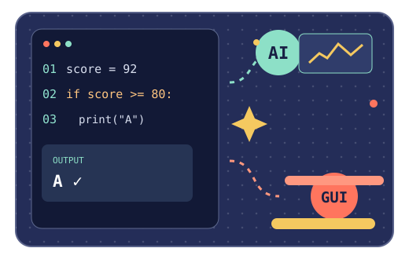

ค่อย ๆ คิด แล้วค่อยเขียน
รู้จัก Python
แล้วไปต่อถึง AI
20 บท + 2 ภาคผนวก120+ แบบฝึกหัด4 ช่วงการเรียนรู้

THE ROADMAP
จากตัวแปรหนึ่งตัว
ถึงโปรเจกต์ที่ใช้งานได้
01 Python core→02 Tools & data→03 AI practice→04 GUI project
COURSE INDEX · 20 CHAPTERS
เลือกบทเรียนของคุณ
เลือกบทจากเมนูด้านซ้าย หรือค้นหาและกรองตามช่วงการเรียนรู้
ASSESSMENT
การวัดผล
| รายการ | รายละเอียด | คะแนน |
|---|---|---|
| คำถามท้ายบท | บทที่ 1–10 บทละ 5 คะแนน · ต้องเข้าเรียน (เช็คชื่อ) จึงได้คะแนนบทนั้น | 50 |
| สอบปลายภาค | ทุกบท (บทที่ 1–20) | 50 |
| โบนัสในห้องเรียน | การร่วมตอบและกิจกรรมในห้อง (เพิ่มให้) | +10 |
เกณฑ์ตัดเกรดและข้อตกลงทั้งหมดอยู่ที่ ภาคผนวก A · เกณฑ์คะแนน
อ่านไป ลองรันไป
ทุกตัวอย่างมี source code และผลลัพธ์จริงอยู่ใต้โค้ด กดคัดลอกโค้ดไปทดลองในเครื่องได้เลย